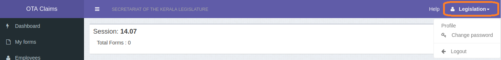

You will be taken to the Dashboard page which shows a summary of your section's activity.
If this is your first login, it is advised to change your existing password. Click your login id displayed at the top right corner and click Change password.
Enter your current and new password twice for confirmation. Don't forget this new password! or write this
down somewhere.

Also change your display name by clicking user id from top right corner and then Profile.
Under Secretaries or above may enter their name here and Save.
Section Officers should write their name followed by a coma and 'SO'. e.g:- Suresan C, SO
ii. Creating and Saving Forms
There are two types of forms: a. Duty Form- (for 2nd or 3rd OT claims on sitting days and claims for non-sitting days) and b. Sitting Days Form– for entering the total sitting days attended after a session.
a. Duty Form
Click My Forms from the left sidebar. Click the green colored New Duty Form button.
A new Duty form that you can edit will be shown
Select Session, Date of Duty and whether second OT, third OT, etc.
Click Add Row. In the name text field, type at least three characters of the employee's name and then select
his name from the list. Make sure the PEN is correct if there are other employees with same name. Select
employee's designation. Click the Time From and Time To fields and change the time of duty. Also enter a
reason for the duty.
Repeat step 3 for other employees for the same date and same overtime slot (first OT, second OT, etc).
Save the form. On successful save, the form will be shown in a new page. This saved form will
now have a draft status. S.O may now verify this form and forward to Under Secretary.
b. Sitting Days Form
Click My Forms from the left sidebar. Click the orange colored New Sitting Days Form button. A new Sitting-days form that you can edit will be shown.
Select Session, Date from and Date to of duty for the assembly session.
Click Add Row. In the name text field, type at least three characters of the employee's name and then select
his name from the list. Make sure the PEN is correct if there are other employees with same name. Select
employee's designation. Enter the total sitting days attended in the field provided
Repeat step 3 for other employees.
Save the form. On successful save, the draft form will be shown in a new page. S.O may now verify
this form and forward to UnderSec.
The below video shows how to create a duty form
iii. Open/View Forms
Click My Forms from the left sidebar. A list of all the draft forms and forms forwarded to you for approval
will be shown. Click View to open and see the form.
The status column shows if the form was created by you (draft) or forwarded to you for approval (to
approve). There are 4 statuses
Draft - The form was created and saved by you, the logged in user. The status is shown in gray color
To Approve - The form was forwarded to you from a section or from another officer under you.
The Created by column shows who forwarded this form to you. This status has a red color.
Pending Approval/Sent - You forwarded this form to your superior officer for approval. It is being
verified by him, and has not yet been submitted to Accounts D for processing. In this case, the higher
officer's name will be shown in the status field in blue.
Submitted - The form has been approved and submitted to Accounts D. This is the final status that
any form will have. The status will have a green color.
The ToDo button shows all forms with Draft and To Approve Statuses. All you have to do is make sure
there are zero items left in the to-do list.
iv. Forwading/Submitting a Form
Click My Forms to view all the forms that you either have to forward or submit. Open and view each form.
On viewing a form, you can see Forward and/or Submit buttons in the bottom right corner. The submit
button will only be shown if you can submit the form to Accounts D. That is, if the form is a duty form, you
should be of the rank of DS or above and if it is Sitting-Days form, you should be US or above.
To forward a form, click Forward, and a window with the name of the officer to forward to will be shown.
If the name of officer to forward to is not shown correctly, click on the name and a list of all the officers
will be shown. Click Forward after making sure the officer's name is correct.
To submit a form to Accounts D for processing, click Submit to Accounts (the green button).
Click Submit again when a window asks for confirmation.
The below video shows how to forward a form
v. Notes for assistants
There is no need to create separate forms for different category of employees.
If a new employee is not present in the list, you can add by clicking 'Employee' from the left sidemenu.
To avoid entering the same employee names in your section again and again for duty claims throughout an assembly session, you can use Presets.
Create a new Duty Form. Select any session, date and OT.
Enter all the persons in your section by clicking Add Row. When finished, instead of clicking Save, click Save as Preset from the bottom right corner. Enter a name for this preset, e.g- Jan2018list1.
Whenever you create a new form, just click Load Preset from bottom right corner, select a preset name and all the names of the persons in that preset will be loaded. After loading, you can delete the rows that you don't need, let's say if a person in the preset was absent on that day.
Tip:- If you create a dummy first row, all the rows added by loading a preset will have the same 'time' and 'nature of work' as this first row.